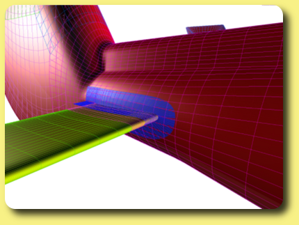
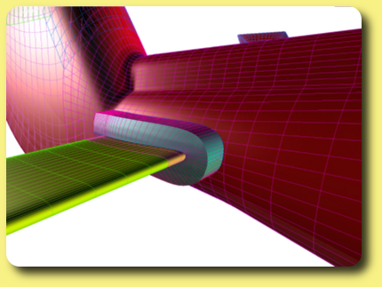
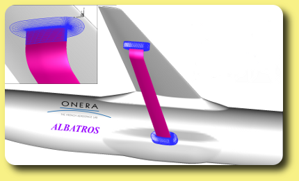
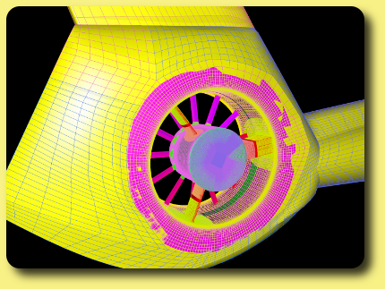

Generator : Accurate corners meshing with collar grids
Collar grids can be generated at body intersection to generate a locally overlapping grid that descretizes accurately the intersection. 
Surface and volume collar grid at stab and fuselage intersection of a Dauphin helicopter by S. Péron.

Automatic generation of intersection meshes (Collar grid) enabling a flexible layout for a strut-braced wing
(ALBATROS configuration designed in the DAAP department of ONERA) by J.-L. Hantrais-Gervois.

Surface collar grids generated for a fenestron by S. Péron.